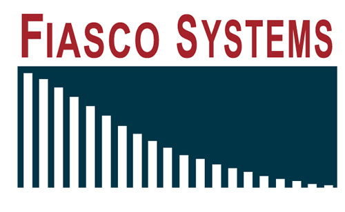

08.13.15
Posted in Deception, Patents at 5:56 pm by Dr. Roy Schestowitz

Summary: Analysis of Cisco’s claims that it is making a new video codec ‘royalty-free’ in an effort to fight trolls (probably MPEG-LA et al.)
Cisco, itself somewhat of a troll these days (reversal of a previous stance and previous actions), is trying very hard to paint itself ‘anti-trolls’ right now (picked by LWN by now), leading to misleading press coverage like “Cisco hands license-busting troll-hammer to THOR”. To quote:
Cisco is sick of the state of patent licensing for video codecs, so has decided to set a royalty-free of its own loose on the world.
The Borg’s problem is twofold: on the one hand, the licensing pools for H.264 fail to represent many of the participants in the industry; on the other, the successor, H.265, can be vastly more expensive.
Is Cisco ever going to stand up to MPEG-LA? Cisco enters a space already populated by Google’s WebM/VP9 and Ogg Theora/Vorbis (here is Monty Montgomery’s initial response to Cisco making its codec free, but not Free software like his own ‘baby’). It would be nice to see Cisco throwing its weight against MPEG-LA, and by extension MPEG-LA backers such as Apple and Microsoft. Some sites frame Cisco’s software as “H.264 and H.265 alternative”. Let’s see how they cope with the patent troll, MPEG-LA. Sooner or later we are bound to find out.
It is no secret that Techrights distrusts Cisco, even for reasons other than patents. Today in the news there are damaging allegations about (and also from) Cisco. Cisco claims that its gear can be hijacked (Cisco’s very own back door must not have helped and instead contributed to it). Perhaps Cisco found out that letting only the “Good Guys” get into everything from Cisco rarely works in practice. Cisco is a back doors industry leader, with public attempt to even standardise the practice and Web pages that boast about it (Cisco may have removed or watered down these pages since the Snowden-provided leaks). Does anyone wish to actually use Cisco products, irrespective of the codecs used, to transmit audio and video inside a private business? Sensitive data is being passed around, making it an attractive target for espionage. Cisco gear is a bug waiting to be remotely accessed (or its communications intercepted) by Cisco’s partners in high places, such as the NSA. Remember that Cisco’s stacks are almost entirely proprietary, no matter how much openwashing the company habitually resorts to. █
Permalink
 Send this to a friend
Send this to a friend
Posted in America, Australia, Europe, Patents at 5:31 pm by Dr. Roy Schestowitz
Summary: The plot to monopolise more of what is public (e.g. public domain, common knowledge) gradually unravels as people secretly (dodging public participation) congregate to centralise power structures, opportunistic predation, costly litigation, and enforcement of demands from corporations (like I.S.D.S.)
IT IS saddening to see that despite some patent progress which is being made in the US, owing for the most to SCOTUS*, other countries/islands/continents regress and essentially derail their own economy. It’s a class war waged between multinational corporations, i.e. plutocrats without borders, and everyone else, irrespective of nationality. It’s a large-scale heist cleverly disguised as harmonisation of national and international laws.
Not too long ago we explained how the software patents debate in New Zealand was being bypassed or worked around in secret. Some vigilant people caught this secretive ploy and alerted the media, calling for action while fighting back against software patents. Now there is a press release and resultant/accompanying media coverage from the local/national media, even ZDNet outside the country [1, 2, 3, 4]. Will this be enough? Well, it’s only the beginning of what could become a very long struggle. New Zealand has already devised the same loophole that Europe is sneakily using in order to allow software patenting, provided it’s tied to some unspecified device.
Speaking of Europe, the Unified Patent Court (UPC) ‘harmonisation’ ploy is well under way as here in Britain, without public consent (no referendum, no polling, not even a Parliamentary debate), the London division of the UPC [is surprisingly] announced”. Yes, the patent parasites (practitioners) just jump the gun and according to this report, “UK Intellectual Property Office has announced the new location of the London section of the Unified Patent Court.”
So UK-IPO basically ignores the standard authorities and procedures, just like the EPO‘s management. One might say that they virtually operate outside the law, much like the Mafia. They know what’s good for them and they don’t bother consulting the public. According to IP Kat, a blog of patent maximalists from London, the Enlarged Board (tackling EPO disputes) finally has something to reveal.
Just like these secret (and now notorious) ‘trade’ deals which we rarely write about (even though more is known about them now), these patent conspiracies (or collusions) serve to just enrich a meta-industry of people who profit from taxation of real practitioners — people whose practice is producing stuff like software and machines. █
_____
* According to Patent Buddy, the SCOTUS ruling in Alice keeps squashing software patents. “New PTO eMod system,” allegedly (no link to the source), “seamlessly generates automated § 101 rejection on every appl’n, saving the PTO millions of $$ a year in exam costs.”
Permalink
Send this to a friend
08.11.15
Posted in America, Europe, Google, Patents at 10:33 am by Dr. Roy Schestowitz
Protectionism regime has gone metaphysical
Victorian arcade in Manchester
Summary: Today’s roundup of patent news, focusing exclusively on software patents and patent scope, not the scapegoat which is patent trolls
THE patent landscape keeps changing (it’s dynamic just like every law, never static), and the more it’s subjected to public scrutiny, the more likely it is to serve the public’s interests, as opposed to corporate interests (the interests of the tiny minority which is extremely affluent). Today we break down our post into several sections as follows.
Patents Scope in the European Patent Office (EPO)
It has been quite some time since we last wrote about the EPO, but it turns out that the Board of Appeal which Battistelli and his goons try to silently crush (or at least make more subservient) is debating patent scope and doing the right thing sometimes. “The application was refused on appeal for lack of inventive step and lack of clarity,” says IP Kat.
Alicestorm Continues to Eliminate Software Patents
“Let’s hope that Alicestorm will discourage companies, or even patent trolls (JDate has begun acting like one), from blackmailing companies using software patents.”Alicestorm is a term coined to demonstrate just how profound an impact the case of Alice Corp. v. CLS Bank has had on patent scope. “US Pat 6,625,582, Converting future retirement,” wrote Patent Buddy, has just been “Killed by 101/Alice @ CAFC” [with analytics at the Patent Buddy Web site].
Chalk up another defeat for software patents (in CAFC even, despite its notorious patent maximalism).
We recently delved into the bullying (using patents) by the JDate 'meat market'. The company, as it turns out, pursues patents on software, despite lots of prior art and obvious triviality, and then uses these patents to bully competitors, even though a court (after a very expensive legal process) would likely invalidate such patents. It’s like SLAPP-type abuse by JDate. As this very long new article puts it, there is nothing novel here. “Does it change anything if it’s on a computer or the Internet?”
Addressing this question, the author says: “This is the question that has been vexing patent types for some time, but patent experts feel that the Supreme Court finally answered the question last year with the unanimous Supreme Court Decision of Alice Corp. v. CLS Bank Int’l.
“In that case, CLS Bank had software to serve as an intermediary in financial transactions, holding funds in escrow, work that financial intermediaries have been doing as long as humans have traded with money. The Alice Corporation didn’t do any work of that kind and had never created any actual software, but it had a patent describing how it could work using a computer.
“In his opinion on behalf the court, Justice Clarence Thomas wrote, “The relevant question is whether the claims here do more than simply instruct the practitioner to implement the abstract idea of intermediated settlement on a generic computer. They do not.””
Let’s hope that Alicestorm will discourage companies, or even patent trolls (JDate has begun acting like one), from blackmailing companies using software patents.
Facebook’s Surveillance Software Patents
“Facebook Patents Technology That Could Allow Banks And Businesses to Discriminate Based on Social Connections,” according to this article from AOL. A lot of the fury is directed at Facebook’s privacy violations (as if that’s news), but what about the company’s efforts to patent software — patents which the company sometimes bullies with?
What we find scandalous here is that Facebook patents software, but AOL looks at it from another angle. To quote: “Facebook, the website everyone and their sister, brother, cousin, uncle, and friends you didn’t even know you had is a member of just secured a patent on Tuesday that could help filter spam and offensive content and improve searches. Isn’t that great? Less spam and no more nude pics, Obama monkey memes, and tea-billy racist outbursts, but there’s more. A lot more and it’s not good. The technology could also allow lenders to use a borrower’s social network to determine whether he or she is a good credit risk. Let that sink in.
“Got that? Your Facebook friends and their spending habits, credit rating, behavior – hell, maybe even their character, could determine whether or not you get a loan and presumably how much interest is going to be applied to that loan.
Credit where due: “The patent was uncovered by Mikhail Avady, founder of SmartUp, a legal technology company in Atlanta. Fortune, CNN, TNW News, and VB all say they reached out to Facebook for comment, but none have heard back, according to the articles.”
In case it’s not obvious, we discourage the use of Facebook for anything at all. Facebook servers need to be blocked at operating system/router level, permanently. Facebook is an attack on the Web and nobody truly needs Facebook. It’s Facebook that needs people, not the other way around.
‘Trade’ Agreements for Patent Loopholes
We recently wrote about how so-called 'trade' agreements were exploited by software patents proponents in New Zealand. Now we learn that patent ‘reform’ in the US (not really the required reform) is closely connected to other issues such as the so-called ‘trade’ agreements, notably TPP. To quote the Washington Examiner: “The House of Representatives has delayed voting on the Innovation Act, a bill designed to curb patent trolling, until after the August recess. But patent abuse still finds itself part of the legislative discussion, in this case with the Trans-Pacific Partnership (TPP).”
“Only in secret, when few of each country’s richest people collude, can such deals be tolerated.”To quote the key part: “The concern centers on sovereign patent funds (SPFs), government-funded organizations that acquire and leverage patents in pursuit of national economic objectives. Ideally, they should act as one-stop clearinghouses where a person or entity can acquire a bundle of interrelated patent licenses instead of negotiating with every individual patent holder. Given that the average smartphone incorporates as many as 250,000 patents, patent pools provide a function in streamlining access to IP rights.”
Patents are a tool of protectionism, perpetuating injustice and social/financial disparity. Why would any country other than patent glorifiers sign these unacceptable ‘trade’ agreements? Only in secret, when few of each country’s richest people collude, can such deals be tolerated. These people are all traitors to their country, especially to their people.
Google’s ‘Good’ Software Patents
Here we go again. The IEEE, steward of leading international journals that I used to do peer reviews for back in my twenties, is doing some shameless Google PR. The “our [software] patents are good patents” nonsense received coverage from Spectrum. It’s that same tactic that IBM once used as part of its PR strategy, portraying itself as a big friend of GNU/Linux. It is still out there. After setting up OIN (headed by an IBM lawyer) we learned that it was an entity so useless against patent trolls that one may wonder whose interests it really serves. Google is now trying to do the same thing. Google keeps saying it will “help startups” (similar to “think about the children!”) by freeing up its patents, even though (as some sites have pointed out by now, even in the corporate media) this helps in no way against patent trolls, since they basically have no actual products to sue over.
Now that a Google-backed company is finding itself as a victim of patent trolls (new article from corporate media), where is Google to help? Where it Alphabet? Nothing.
“We quickly attracted attention,” said the company. “We were living the American Dream. Until a patent troll — a company whose only business is suing legitimate businesses to force expensive settlements — hit us with a frivolous lawsuit.”
So where is Google with its ‘good’ patents that are intended to help startups? Oh, that’s right, there’s no solution there for patent trolls. This alone (situations such as this) helps justify a patent reform — like those delayed until Congress returns to normal sessions after the summer’s vacation. █
Permalink
Send this to a friend
08.10.15
Posted in Apple, Courtroom, EFF, GNU/Linux, Google, Microsoft, Novell, OIN, Oracle, Patents at 7:12 am by Dr. Roy Schestowitz
Patents not on engineering (or physical products) anymore
Summary: News about patents from all across the Web, placing special emphasis on software patents and how these affect Free software projects, including Linux and Android
THIS week’s patents roundup revolves around practicing companies that act in a way which is almost indistinguishable from patent trolls. As we have said here for several years, the term “patent trolls” can be misleading because many large companies act in the same way but don’t get labeled “trolls”, mostly because of their size. It means that a fight against “patent trolls” often turns out to be a fight over scale, waged by large corporations against smaller ones. Check again who is behind the PATENT Act [1, 2, 3, 4, 5, 6, 7, 8].
Today’s post brings together several stories and themes/strands in order to keep readers abreast of the latest developments.
Open Invention Network
We have spent over 8 years writing about the Open Invention Network (better known as OIN) and why it cannot effectively protect Free software projects. We also exchanged many E-mails with the OIN and some trolls. We saw how toothless the OIN can be in many scenarios and we challenged the OIN over it. I spoke in length with their CEO a few times over the telephone and I still think that it helps legitimise software patents and rarely achieves very much, except promote the interests of large corporations (like those which founded it and still fund it).
Earlier this morning FOSS Force published this very long interview with Deb Nicholson, who had worked for the FSF before she moved to OIN. This interview is very good and Nicholson’s views on patents are fine. We shared them here before.
“My work at OIN involves a lot of research,” Nicholson says. “I read academic papers on litigation trends and try to stay on top of who’s getting sued this week. It also involves a lot of behind the scenes emailing. I have lots of informal conversations with people about how you run a free and open source software project. Sometimes, they don’t realize that lots of other companies are succeeding with FOSS business models and shared community resources. Once they see that it can be done, they often feel more confident.”
Nicholson then speaks about the role of SCOTUS in lowering the risk of software patents.
“The Supreme Court,” she explains, “has given the lower courts the tools to rule against two specific categories of vague and frivolous patents. This is great for companies that have the cash and the time to go to court. For companies that don’t want to fight in court — which is lots of them, because it really is expensive and time-consuming — the letters will keep coming. Plus, there are still plenty of overly broad or obvious patents on the books that may not be affected by the recent rulings. So, things are improving but I wouldn’t say that we’re finished.”
She makes an important point regarding the cost of litigation, but the matter of fact is, USPTO examiners are now tougher on software patents and fewer companies (or shell firms) are eager to assert software patents for fear of losing them. Not only the extorted party (usually developers) is scared of the courts; the plaintiff, e.g. a patent troll, is too. What SCOTUS has done is, in our humble assessment, the best news in nearly a decade. We cannot recall anything bigger or better in terms of magnitude, at least not when it comes to systematically squashing software patents (not one patent at the time as per the EFF’s much-advertised earlier efforts, dubbed “patent busting”).
Finjan
The Finjan-led patent extortion crusade was mentioned here just weeks ago (they are Microsoft-connected) and now, just weeks later, this firm’s troll entity (Finjan Holdings) gets extortion money from a really nasty company, Blue Coat, which some say the EPO hired to spy on people like yours truly and EPO staff. “Finjan Holdings,” as a trolls expert explains, is “a patent-licensing company operating in the cybersecurity space” and it has just “won a hefty $39.5 million jury verdict (PDF) on Tuesday, when a San Jose jury found that Blue Coat Systems infringed five of its patents.”
Keep an eye on Finjan, not just because of its Microsoft connections. Finjan has become a very malicious company. It deserves to go out of business. The sooner, the better.
Cisco
Cisco, now known for its surveillance and back doors (which is even openly discusses when applying for standards), is receiving negative publicly because as its profits run dry (or more meager), it increasingly turns into more of a troll, just like Microsoft and Apple. Is this what Cisco wants to be renowned (or notorious) for? Remember that TrollTracker, a fighter against patent trolls. was a Cisco lawyer, but Cisco is now turning into what it fought. Arista, according to this article, says that Cisco is “Very Much Like a Patent Troll” (that’s the headline) and it’s coming all the way from the top. To quote the article, “Arista’s top lawyer used the company’s earnings call for trash-talk Thursday, saying Cisco is “behaving very much like a patent troll” in its intellectual property lawsuit against Arista.
“Arista Networks Inc. CEO Jayshree Ullal kicked off the badmouthing: “Despite all the overheated rhetoric we’ve been hearing from Cisco blogs about Arista’s brazen copying, we think the only thing brazen about the suit is the extreme length Cisco has gone to,” she said. “Our customers have shown unwavering support.”
“Cisco has basically become another very malicious company, if not for colluding with espionage agencies, then for bulling/attacking rivals using patents.”“Arista Vice President and General Counsel Marc Taxay agreed. “Ironically … it appears to us at any rate that Cisco is behaving very much like a patent troll, which is pretty much what they’ve spent the last decade condemning.” Cisco is claiming patents for widely implemented features and functionality that exist on a broad range of switches today, and some of the patents affect features the patents were never intended to cover, Taxay said.”
The Wall Street Journal, taking note of “expensive legal battle with Cisco”, also expresses concerns about this case. “That may give some investors pause,” the author claims, “especially when Arista remains embroiled in an expensive legal battle with Cisco, which has accused it of infringing on patents.”
Cisco has basically become another very malicious company, if not for colluding with espionage agencies, then for bulling/attacking rivals using patents. Cisco used to be on the defensive, but now it’s on the ofsensive, and not against trolls. For a company that is eager to be seen as a FOSS and GNU/Linux supporter, this surely is a dumb strategy whose gains — if any — are massively outweighed by public image erosion.
JDate
A new article from Timothy B. Lee helps chastise the bully called JDate, which we wrote about very recently. “JDate,” he explains, “recently sued JSwipe, a mobile dating app for Jews that works like Tinder. Most media coverage has focused on mocking JDate for essentially claiming that it has a monopoly on certain uses of the letter J.
“But in some ways, the part of JDate’s lawsuit that really merits mockery is the patent infringement claims. JDate is suing JSwipe for infringing a broad patent that essentially claims the concept of using a computer to match pairs of users who express interest in each other. The lawsuit illustrates the continuing need for patent reform, because the current system makes it too expensive for defendants to challenge dubious patents.”
There are some interesting comments about JDate here. Although this Web site only targets a small niche, we strongly encourage all readers to boycott JDate, or else they’ll continue their shameful bullying, perhaps inspiring other companies to do the same.
The Economist Versus Patents
The Economist, interestingly and surprisingly enough (given its strong pro-business bias), chastises the patents regime in at least two articles this month. One is titled “A question of utility” and says in its summary: “Patents are protected by governments because they are held to promote innovation. But there is plenty of evidence that they do not” (we have covered such evidence for almost a decade).
“The ability to patent,” says the author, “has been extended from physical devices to software and stretches of DNA, not to mention—notably in America—to business processes and financial products.”
Yes, patent scope is a huge part of the problem.
“Time to fix patents” is the second such article from The Economist and it too is an assault on the status quo. “Ideas fuel the economy. Today’s patent systems are a rotten way of rewarding them,” said the summary.
Here is a key part of this article: “Patents are supposed to spread knowledge, by obliging holders to lay out their innovation for all to see; they often fail, because patent-lawyers are masters of obfuscation. Instead, the system has created a parasitic ecology of trolls and defensive patent-holders, who aim to block innovation, or at least to stand in its way unless they can grab a share of the spoils. An early study found that newcomers to the semiconductor business had to buy licences from incumbents for as much as $200m. Patents should spur bursts of innovation; instead, they are used to lock in incumbents’ advantages.”
It is nice to see even The Economist debunking these tiresome myths, many of which still perpetually spread by patent profiteers rather than producing companies. Are we on the cusp of a mindset change?
Patent Propaganda From Lawyers’ Sites
Lawyers’ media, seeking to maximise dependence on patent lawyers, promotes patents on construction in this series that starts with the following paragraph: “In the first of this three part series, clean tech, or green construction, was defined as construction that reduces or minimizes the environmental impact in building construction, operation and use. That article also discussed the importance of building intellectual property walls, and especially with patents, to protect inventions from being incorporated into projects by unlicensed users. Equally important is knowing the patents that may prevent a company from incorporating patented technology for which it has no license. Patent rights can shape an industry; consequently, companies must develop patent strategies. Patents for green construction encompass everything from building materials, to software for optimizing various processes, to green energy systems, amongst others.”
Yes, they even suggest software patents right there.
“The US may not have a world class patent system,” say the patent maximalists of IAM, “but its professionals are second to none” (for taxing by lawyers perhaps). Another site of patent lawyers who lobby for a lot of ludicrous types of patents (including software) pretends that patents take a short time to receive, despite that infamous backlog and these notorious issues which can only be tackled by lowing examination standards, hence granting bogus patents (trivial, and/or with prior art).
“Intellectual property & intangible assets” is the headline of this British article which is so full of nonsense that we don’t know where to start. To quote one part of it: “Newton says the real value in business these days is in knowledge, which is tied up in intellectual property, patents, trademarks and designs.”
That’s nonsense. The term “intellectual property” refers to patents, trademarks, and copyrights, so it cannot be separated as above. Then there are designs, which are already (in most domains) covered by copyrights and if the author wishes to speak about trade secrets, that’s different from all the above and still pertains to knowledge, without having to introduce that vague notion of “intellectual property” and “intangible assets” — both horrible propaganda terms that equate ideas with objects.
“Patent scope has been getting so much worse over time, to the point where abstract concepts like business methods, algorithms, and even basic designs become patents although copyright should definitely suffice.”The article titled “9 Tech Startups Disrupting the Legal Industry” talks about proprietary software that patent lawyers use to keep track of their work. “Experts say the market for legal technology is as much as $400 billion,” the article says, but there is nothing like a citation to support such a figure.
“We hear the same complaints over and over every time Congress tries to improve the patent system,” Matt Levy wrote the other day. “In fact, we’ve been hearing some of them for over 70 years.” Patent scope has been getting so much worse over time, to the point where abstract concepts like business methods, algorithms, and even basic designs become patents although copyright should definitely suffice.
Design Patents and Linux Gadgets
Speaking of design patents, watch what patent maximalists celebrated this weekend: “The text cluster provided here shows that much of Hasbro’s portfolio of 1,772 patents (339 of which are active) are related to toy vehicles, electronic games and ornamental designs, indicating a fair amount of design patents.”
The notion of “design patents” has got to be one of the most loathsome and ridiculous. The article “Apple v. Samsung and a Fight Over the Patents for Designs” was published by Forbes the other day, reminding us of so-called design patents (such as the widely-ridiculed 'rounded corners' patents). Apple is very desperate to stop Android (and by extension Linux), but doing so by bullying with outright bogus patents isn’t the way to compete. CPTN members (i.e. holders of Novell’s patents) Oracle, Apple and Microsoft have been systematically attacking Android using patents and Oracle now takes this further. “Oracle’s lawsuit against Google over Java copyrights probably won’t be back in a courtroom again until next year,” wrote The Register, “but in the meantime, Oracle has asked the court to let it expand the scope of its complaint to include events that have occurred since it was first filed in 2010.”
This forever-legal-limbo scenario helps hurt Android, so we cannot just pretend that software patents are not a problem. More FOSS and GNU/Linux site must learn to address these issues as a matter of priority. Not enough are doing this at the moment and it definitely helps our foes. Many people seem to forget that Microsoft still attacks GNU/Linux using patents (albeit more discreetly than before). █
Permalink
Send this to a friend
08.06.15
Posted in Africa, America, Asia, Patents at 4:51 am by Dr. Roy Schestowitz
“People naively say to me, ‘If your program is innovative, then won’t you get the patent?’” —Richard Stallman

Software development is NOT writing English sentences
Summary: Dealing with some of the hard (but soft, or invisible) issues in the US, where patents on abstract things are commonly misused for trolling/blackmail and abstract ideas have state tax associated with them
THE political landscape in the United States makes it increasingly unlikely that the patent system will be reformed in anyone’s favour, only in corporations’ favour (and corporations are not people). It is abundantly clear that the current proposals/bills on the table are unfit for purpose if the goal is really fixing the patent system. We already wrote over a dozen articles about this and today we present some of the latest finds.
“Patents threaten access to vital medicine” says a headline from South Africa, part of BRICS. It looks like South Africa is starting to view things like India does (I is India and S is South Africa in BRICS). Populist nations realise that many patents are unjust or even evil because monopoly is not more important than lives. South Africa and India both disallow patents on software, too.
“Populist nations realise that many patents are unjust or even evil because monopoly is not more important than lives.”What about the US? Well, as we showed three days ago (“GOP Media Deception, Healthwashing Patents”), the healthwashing tactics are being used to curtail and eliminate any potential of a reform. It’s the “PEOPLE ARE GOING TO DIE” sort of blackmail (if patent reform is passed).
GOP media (i.e. corporations) has played a big role in lobbying against patent reform, but oddly enough, someone called Mytheos Holt, writing in a GOP-leaning site, tackles what’s titled “The Three Dumbest “Conservative” Objections to Patent Reform”. To quote the key argument: “You have to give the enemies of patent reform credit: They do love to hide behind the idea that they’re defending the free market. To hear them tell it, in fact, they’re the only thing standing between America and a lawless jungle where Google and Apple can step on inventors with impunity and then laugh in their faces as the courts’ hands are tied.”
Here is a useful and long list of reform supporters: “Patent reform enjoys a long tradition of intellectual support from a wide range of right-leaning think tanks and advocacy groups. Conservative and libertarian groups that have advocated for patent reform in one form or another include Americans for Tax Reform, the Heartland Institute, the Cato Institute, the Heritage Foundation, the Competitive Enterprise Institute, the MercatusCenter, Americans for Prosperity, Frontiers of Freedom, the Independent Institute, the Manhattan Institute, the Mises Institute, Institute for Liberty, Hispanic Leadership Fund, the Institute for Policy Innovation, the Latino Coalition, Independent Women’s Forum, Lincoln Labs,the American Enterprise Institute, the Center for Individual Freedom, American Commitment, Taxpayers Protection Alliance, the Discovery Institute, Generation Opportunity, Citizen Outreach and others.”
With so much support from so many groups, how come there is still no change? See Think Progress with its new article “Why Patent Trolling Is So Hard To Fix”. As Think Progress puts it: “Software developers could have a hard time getting their next big idea patented thanks to new rules the U.S. Patent and Trademark Office (USPTO) issued, making some inventions, particularly innovative software and medical devices, unpatentable. ”
Think Progress makes it sound like a bad thing. We wrote about this an hour ago and it is definitely good news. It’s why so-called ‘reform’ might not matter after all. It’s already happening owing to the SCOTUS (Alice and § 101).
“It’s a fantasy, and just like all fantasies, sooner or later it will get shattered by reality.”Meanwhile, as revealed by Accounting Today, lobbyists’ media [1, 2], and Wall Street media [1, 2, 3, 4], the US want to introduce a ‘lower’ tax on invisible things, as if that makes any sense at all. The US is taxing immaterial things, ‘stuff’ like mere thoughts. A much later article from lawyers’ media framed this as “Tax Breaks”, stating that “proposed legislation would enable a company to deduct 71 percent of income derived from qualifying IP or 71 percent of their taxable income, if less.”
This helps prove how crazy a system we’re dealing with here, where mere ideas (misleadingly names “property”, the P in “IP” or “IPR”) are treated as taxable and the corporate media now celebrates tax “discounts” on ideas. The Alice case, which tackles a lot of these abstract patents, justifies the common reference to the case: “Alice in Wonderland”. It’s a fantasy, and just like all fantasies, sooner or later it will get shattered by reality. No country in the world deserves such a rubbish patent system. █
Permalink
Send this to a friend
Posted in Marketing, Patents at 4:15 am by Dr. Roy Schestowitz
“There was even an unofficial competition to see who could get the goofiest patent through the system. My entry wasn’t nearly the goofiest.” –James Gosling, father of Java (context)
Summary: Examples where patenting of simple ideas can be viewed as clever PR ploys rather than actual inventions
THE patent hype is largely manufactured. It’s the outcome of brainwashing, to which patent lawyers (the opportunistic parasites) contribute a great deal. In reality, as we have shown before, terms like “patented” or “patent-pending” merely serve to give the impression of inventiveness and advancement. It’s marketing, geared towards respect from rival companies (counterparts or potential partners) and maybe customers too, especially if they are gullible.
The use of patents for marketing was demonstrated (again) by Steph the other day. “What you are seeing here is a measuring cup with a handle,” she wrote. “How, on any planet anywhere, is that patentable? You can’t throw a dead cat without hitting something similar-looking. I mean, honestly.” Steph previously showed how this is done by so-called ‘beauty’ (cosmetics) giants. They’re not alone when it comes to such charades as in the field of software (and gadgets too) this is done sparingly. Earlier this week IP Kat debunked what it called “the myth of the lone inventor.” Corporate image and senseless PR is what many patents are really about. Acquiring patents by applying for them is not hard (almost everything gets accepted at the end), it’s just expensive.
Let’s look at some recent examples where patents are used for little more than marketing. A week ago The Register wrote that “at the time of writing, 13 EVO:RAIl jobs are open at the company and patents for the software powering the appliances recently emerged.”
What will these patents be used for? Looking at the details and context of the article, they won’t be able to defend themselves from giants in their field, so these patents cannot be used defensively (nor offensively). VMware/EMC would eat them alive because of disproportionate portfolio size.
Here is another example. It’s a press release describing MacroPoint as “creators of patented freight tracking software designed to give 3rd party visibility into load status” (as if being “patented” makes it better).
We recently wrote about Fitbit and patents [1 2 3]. One potential competitor from Korea is hoarding patents rather than focus on development. To quote a puff piece about this company:
He adds 54 patents in haptic technology to Dot’s existing five, providing a strong head start over potential competitors for the company, founded only one year ago.
What exactly can this small company do with those patents? These products are designed to help spy on people even in their sleep and the patents above serve this agenda in no way whatsoever. It’s another example of (mis)use of patents for marketing, perhaps in an effort to find venture capital.
Last but not least, consider imperialism and the turf wars long fought between superpowers. Nuclear submarines (powered by a nuclear process in the US before nuclear missiles were loaded on board by the Soviets), space missions, etc. have long been used for political propaganda, giving the impression of military might and superiority. Idealogical wars (communism, capitalism and so on) have long been fought on grounds like patents, inventions, “firsts” (e.g. reaching space, landing on the moon), not just games of Chess. It’s now rather similar in the industry because many companies try to prove their supposed ‘superiority’ by hoarding patents and bragging about the number of patents they hold under their name/belt.
Here is a Pentagon-leaning site coming up with the headline “Navy’s reign in patent rankings continues”. Well, the Army wants monopoly and power; using patents in this case is just marketing. It’s not as though the Navy is going to take some foreign nation to court (which sovereignty anyway?) over patent infringement. To quote the military propaganda: “The value of military technology research can be looked at in a variety of ways, with protecting lives on the battlefield likely the most commonly cited goal. Another, easily quantified metric, though, might be the number of patents generated by the military’s research labs.”
No, that is just marketing. Calling it “research labs” is in itself propaganda, relying on two nonsensical words that are associating war and militarism with science. The army does not like science, it likes power and domination. It is Free software-hostile (except for the practical purposes), back doors-friendly, and it now leans towards yet more proprietary software, based on this news which claims: “Being able to select a commercial-off-the-shelf software package and customize it as little as possible for a project this massive is the reason that DoD has given all along for not opting to use the U.S. Department of Veterans Affairs’ proprietary and open source VistA EHR.”
“Accenture is f*ed up,” explained iophk to us (he had served in the Army). “This will be another mess with enormous overruns like with the stock exchange. $9 billion, that’s what, 45,000 man-years at $200k salaries?”
Well, considering the love of patents (for marketing purposes), why not love for proprietary (secret) software too? Protectionism is what it’s all about. █
Permalink
Send this to a friend
Posted in America, Asia, Law, Microsoft, Patents at 3:34 am by Dr. Roy Schestowitz
SCOTUS changed everything
Summary: A comprehensive look at the past week’s news, including new cases that serve to weaken software patents in their country of origin
THE very existence of software patents is troubling. Not everyone can understand that because not everyone is a software developer. If the notion of a global patent system ever becomes a reality, then we must ensure that this system does not have any software patents. Therein lies the importance of the fight in the United States, by far the most influential country in international politics.
A couple of days ago some Microsoft-friendly media (paid by Microsoft for a lot of advertising) published the post titled “Copyright is enough for software”. It is not a bad post and it helps echo the feelings of many software developers. To quote the opening part: “Now I will fully admit that software patents are getting more restrictive, and the patent office, working with members of the community, has offered up a few ideas to make software patents less offensive and broad. This is a good thing, as in the past we’ve had some truly horrendous software patents issued for utterly mundane things that every developer uses every day.”
As we are about to show later in this post, the US patent office is indeed narrowing down scope in some areas (such as software) and courts support such a move, which they quite likely motivated in the first place.
Patent lawyers are, quite understandably, nervous. They try to lure people into conducting patent searches and fall into the wasteful trap which is software patenting. See this new article from the technical press, suitably titled “Patents: Exercises in Futility and Incomprehensibility?”
They are a waste of time and they achieve nothing but collective fear, which slows down development. “Learning anything from patent documents has to be one of the world’s least productive endeavors,” explains the author. “But there are a few techniques by which you can squeeze out what useful information may be hidden there.”
Better yet, never look at any patents at all. It only increases liability in case of infringement. This isn’t an act of civil disobedience but a matter of setting priorities correctly. Software developers should write code, not read patents. Imagine patents on recipes and cooking, leading chefs to endless reading of patents (instead of cooking), whereupon some forms of cuisine will be deemed too risky to do, making food more expensive and stale. Who benefits? Certainly neither chefs nor the public. Such a system would result in cooking ‘conglomerates’ and hoarding by their facilitators like lawyers.
International Trends
In BRICS nations there is resistance to software patents, although based on this new article, China is allowing patents on software in some cases. China has been trying to artificially elevate the number of its patents for quite some time, even by lowering the threshold/bar of what’s patentable. It is, in part, a PR exercise. It’s part of the national agenda, seeking to rid this growing economy and great nation of the “knockoff” reputation.
Not many Western companies bother patenting their work in China (unlike, say, Korea and Japan, where companies also love to patent their stuff in Europe and the in US). Not many people or companies in China get sued over patents, at least not based on what we can see. Western companies very rarely get sued in China (over patents or anything else for that matter); there are only few cases that are seldom covered (on very rare occasions), usually involving some big brand like Apple because such stories ‘sell’ better.
Quoting the above: “The first [patent] is from the Chinese State Intellectual Property Office (No. 200880126543.0) entitled “Method, System and Computed Program for Identification and Sharing of Digital Images with Face Signatures”, while the second patent is from the Canadian Intellectual Property Office under the same title (No. CA 2711143).”
It is interesting that Chinese patents are sought by companies for the same ideas that are patented in Canada. Depending on which application was made first, we may be able to deduce or at least guess the intention. Not too long ago Apple was sued over patent infringement in China, where Apple is clearly losing to Android players like Xiaomi (now exceeding Apple in terms of sales). Before China was fighting back against patent aggressors like Microsoft Chinese companies like ZTE surrendered to Microsoft without a fight. It helped demonstrate the role of software patents in China. Microsoft can try to ban imports from China until or unless products are castrated (features removed), money gets paid to Microsoft, or Android is dumped in favour of Windows (or a Microsoft-centric version of Android, with a lot of Microsoft malware preinstalled). Overall, China has nothing to gain from software patents. It merely suffers from these. Thankfully, China isn’t falling for all these horrible ‘trade’ deals (misleadingly marketed to the public as “against China”), where increase in patents and their scope/range of applicability is paramount.
According to a new article from IAM, China’s ZTE is now fighting a battle with a US-based troll. It’s the Microsoft-backed Android/Google-hostile Vringo. Patent Buddy called this “ZTE’s Plan to Disparage Vringo and Change US Patent Law (to make it anti-patent)” (so again, US patent law is relevant here).
Over in India, another BRICS nation that does not in principle allow software patents, Google has just received a software patent. “Google has secured an Indian patent,” said the Financial Express, “for an invention regarding a method and system for transferring annotations associated with video files. ”
There seems to be some kind of confusion when Western companies come to BRICS nations and attempt to patent software. Are patent examiners aware at all of the fact that software is ineligible for a patent where they are? Perhaps we need to focus more on the source of this influence, which fools examiners into granting patents on software, gradually taking these global, even against the law.
USPTO Guidance ‘Reform’
The US patent office, the USPTO, is trying to keep up with the courts. It plays catchup with the law, keeping abreast of big judgments more than a year later (because the USPTO, like the court system, is far too slow). Here are the concerns of Barnes & Thornburg’s Intellectual Property Law Department (i.e. patent lawyers), among others. It’s about Alice and software patents (§ 101). This is again input from patent lawyers (Finnegan, Henderson, Farabow, Garrett & Dunner LLP), also echoed here. What we basically see here is a lot of responses from patent lawyers to changes that are happening at the USPTO, based on new guidelines for patent examiners. Snow Christensen & Martineau (more lawyers) chose the title “New examination guidelines from the USPTO on subject matter eligibility: what it means for the patentability of your inventions” (the most desperate headline came from the most shameless promoters of software patents).
For the uninitiated, software patents are gradually dying in the US, for the courts repeatedly rule against them, invalidating a lot of patents in the process (even by extension, through precedence). The USPTO is just trying to keep abreast here and refrain from granting more patents that would later get invalidated because 1) it damages the credibility/reputation of the USPTO (granting patents in error) and 2) it lowers, in due course, the incentive to file/apply for patents at the USPTO, for they may not be honoured by the court system, deeming them a massive waste of time and money.
Courts Continue to Crush Software Patents
As another week goes by, another case serves to show that software patents are not potent enough for winning a case, not even in the US. Invaliding patents on invisible things (like algorithms) is the big trend these days and here again is a reminder of that in lawyers’ media. “It is very important to provide adequate disclosure when using “means-plus-function” claims in a U.S. patent,” says the author, “particularly in the field of software.”
According to this same publication, more software patents are about to get invalidated. To quote the opening paragraph: “On July 9, a judge in the district of Oregon granted two motions for summary judgment finding that the claims of United States Patent Nos. 7,346,766 and 6,728,877 fail to state an inventive concept sufficient to satisfy the Supreme Court’s test for patentability of an abstract idea under Section 101, and are therefore invalid. The patents-in-suit involve technology related to the migration of user configuration settings from a source computing system to a target computing system. In granting defendant’s motions for summary judgment, the court followed the Supreme Court’s guidance in the landmark Alice Corp. Pty. Ltd. v. CLS Bank, Int’l, 134 S. Ct. 2347 (2014) decision.”
No wonder patent lawyers worry. Alice has been doing this time after time. “The Supreme Court has made changes to patent law and how it’s interpreted, he says, which makes the interpretation of patent laws more uncertain, particularly where software is involved,” corporate media wrote the other day.
Here is another new article about this. “To be granted a patent for software,” it says, “the patent application had to overcome objections based on a 2014 US Supreme Court case holding that the mere computer implementation of a business method is unpatentable. The US patent examiner has judged Arria’s “Method and Apparatus for Configurable Microplanning” to be an innovation that contributes to the field of computer science. The innovations underlying this and Arria’s two other US patents enhance the quality and authority of the plain English narratives being written by the Arria NLG Software Engine without human intervention.”
We gradually get to the point where most software patents are worth $0 and no new ones (or very few ones) actually get granted. In this trend broadens in the US, then software patents will be universally (globally) dead. It’s only a matter of time.
Lobbying Persists
The USPTO has been changed and perturbed over hundreds of years, with scope expanding to millions of patents on mere ideas (not physical, no mechanics), but some people live in the past and pretend that no correction is required. Martin Goetz, who has been making a career out of speaking in favour of software patents, is now enjoying support from patent lawyers who give him their platform. The man who started software patents (Martin Goetz got the first one) wants us to stop saying “software patents” as if trying to just dodge the debate by changing words will make these patentable again. CII? Computer-implemented inventions? That term never caught on. Just like “NPE” for trolls, or formerly patent sharks.
Patent lawyers are having an ‘ACTA moment’ right now, realising that what they tried so hard to defend has got a very bad name, so they try to rename. This basically means they lost.
It is going to be interesting to see how the rest of the world responds to the post-Alice status quo in the US. Software patents are in the process of rapid demise, but it may take half a decade for this plague to be totally eradicated. These systems are very slow to adapt to change. █
Permalink
Send this to a friend
08.05.15
Posted in IBM, Patents at 5:51 pm by Dr. Roy Schestowitz
Summary: Once a hardware giant, IBM moves on to becoming a patents giant, and even software is on the menu
SOME time less than a decade ago the buzzword “cloud” started to creep in. What it meant back then was not what it means right now because the term is so vague that it became almost meaningless. Depending on who one asks, now it means just about anything to do with a server, even if it’s a local server storing something on your desk. In a sense, everything is “cloud” now. Everything (well, almost everything) can be framed as such.
“Cloud Patents” became a new and misleading term in the media some days ago [1, 2, 3, 4]. It’s because of IBM, a longtime promoter of software patents (although IBM usually hides this tendency or resorts to openwashing with some pledges, OIN, et cetera).
“IBM is moving into cloud patents, but that’s not necessarily going to upset established providers.”
–Charles BabcockDays have passed since IBM’s charm offensive and Charles Babcock now says that “IBM Locks Up Cloud Processes With Patents”. “IBM has received 1,200 patents on cloud computing over the last 18 months,” he wrote. “Here’s a sample of what Big Blue is patenting and why it’s a concern.” Charles Babcock later published “IBM Wields Cloud Patents For Defense, Profit”. He said that “IBM is moving into cloud patents, but that’s not necessarily going to upset established providers. In a pinch, they could end up as partners.”
Another new report (the latest we could find) says that “Just like Goldfinger attempted to corner the supply of Gold, it seems that Big Blue is attempting the same thing with cloud patents.”
Whatever IBM is doing here (or trying to achieve hereafter), it’s a huge disservice to the fight against software patents. Yes, many of these (probably most) are software patents and this exercise in futility does nothing but saturate the algorithmic space with yet more monopolies, complicating everyone’s work on software. IBM makes it possible to virtually sue (or countersue) almost every software company on this planet. Should anyone celebrate this? █
Permalink
Send this to a friend
« Previous Page — « Previous entries « Previous Page · Next Page » Next entries » — Next Page »


 Content is available under CC-BY-SA
Content is available under CC-BY-SA